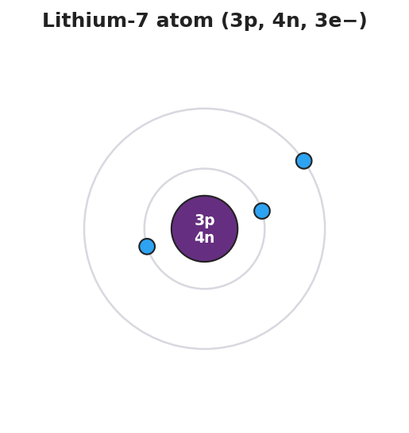

01 Phenomenon
Shrink yourself until a single atom is as big as a football stadium. The part of the atom that holds almost all of its mass — the nucleus — would be the size of one pea sitting at the 50-yard line. The electrons would be tiny specks moving around up in the highest rows of the stands. Everything in between — the entire stadium bowl — would be empty space. Yet the chairs you sit in, the floor you stand on, and your own hand all feel completely solid.
02 Driving question
Why is almost all of an atom's mass in a region that is almost entirely empty space?
03 Notice & wonder
| I notice… | I wonder… |
|---|---|
Turn & Talk #1: In the stadium model, the pea (the nucleus) is tiny but heavy, and the seats are huge but empty. In one sentence, what does this tell you about where the mass of an atom is compared to where the empty space is?
04 Initial model
Before your teacher names anything, draw your best guess for the inside of an atom. Show where you think the heavy part is and where you think the empty space is. Label anything you can.
(Draw your model in the box.)
What part of your drawing do you think holds almost all of the mass? _______________________________________________
05 Investigate
You are working in a random group at a vertical surface (whiteboard or chart paper). Your group has one pea (the nucleus) and a Periodic Table.
Part 1 — The Atomic Stadium scale calculation
Slice 1. The nucleus is about 1/100,000 the diameter of the whole atom. Your pea is about 1 cm across and represents the nucleus.
- If the pea (1 cm) is the nucleus, about how wide is the whole atom in your model? Show your work.
1 cm × 100,000 = _______________ cm = _______________ m = _______________ km
Slice 2. A football stadium is about 200 m across.
Is the stadium big enough to hold your whole model atom, or just part of it? _______________________________________________
Where would the nucleus (the pea) sit, and where would the electrons be?
Nucleus: _______________________________________________ Electrons: _______________________________________________
- Looking at your model: is the atom mostly full or mostly empty? _______________________________________________
Part 2 — Build the particle property table
Use the Bohr model of lithium below and what you learned in earlier lessons. Lithium-7 has 3 protons, 4 neutrons, and 3 electrons. Reason out each cell — do not just copy a definition.

Fill in charge, relative mass, and location for each particle.
| Particle | Charge (+1, 0, or −1) | Relative mass (about 1, or about 0) | Location (nucleus or shells) |
|---|---|---|---|
| Proton | |||
| Neutron | |||
| Electron |
Reasoning questions:
Lithium has 3 protons (each +1) and is neutral overall. What charge must each of the 3 electrons have for the whole atom to add up to zero? _______________
On the model, the nucleus is drawn small and dense and the electrons are tiny specks. Which particles do you think carry almost all the mass? _______________________________________________
Why must the protons and neutrons be in the nucleus and not out on the rings? _______________________________________________
06 Make it make sense
Use your property table and your scale model to answer each item.
An atom is mostly empty space, but it still feels solid when you touch it.
- Which particles fill up almost all of the atom’s volume? _______________________________________________
- Which particles carry almost all of the atom’s mass? _______________________________________________
- In one sentence, how can the atom be mostly empty and still feel solid? _______________________________________________
A neutron and a proton are both in the nucleus and both have a relative mass of about 1.
- How are the proton and neutron different? _______________________________________________
- What is the total charge of lithium’s nucleus (3 protons + 4 neutrons)? _______________
An electron has a relative mass of about 1/1836 of a proton.
- About how much mass do lithium’s 3 electrons add compared to its nucleus? _______________________________________________
- Why does this mean almost all of lithium’s mass is in the nucleus? _______________________________________________
07 Key vocabulary
- proton
- a positively charged subatomic particle (charge +1) located in the nucleus, with a relative mass of about 1; the number of protons defines the element
- neutron
- an electrically neutral subatomic particle (charge 0) located in the nucleus, with a relative mass of about 1; together with protons it accounts for essentially all of an atom's mass
- electron
- a negatively charged subatomic particle (charge −1) located in the shells / electron cloud outside the nucleus, with a relative mass of about 1/1836 (≈ 0); electrons occupy almost all of the atom's volume but contribute almost none of its mass
Use each term in a sentence about today’s model or investigation. Do not copy the definition — describe something you actually did or saw.
proton: _______________________________________________ _______________________________________________
neutron: _______________________________________________ _______________________________________________
electron: _______________________________________________ _______________________________________________
08 Revise your model
Return to your Initial Model drawing. Add labels using today’s vocabulary:
Label the part that holds almost all the mass. Name the two particles found there: _______________ and _______________
Label the empty region. Name the particle found there: _______________
Add the charge of each particle next to its label (+1, 0, −1).
Then finish this Because / But / So sentence:
An atom is almost entirely empty space, yet almost all of its mass sits in the nucleus, because __________________________________________, but __________________________________________, so __________________________________________.
09 Exit ticket
- Which subatomic particle accounts for essentially none of an atom’s mass, and where is it located?
Particle: _______________ Location: _______________________________________________
- A carbon-12 atom has 6 protons, 6 neutrons, and 6 electrons. Which particles are found inside the nucleus, and what is the total charge of that nucleus?
Particles in the nucleus: _______________________________________________ Total charge of the nucleus: _______________
- In one sentence, explain why almost all of carbon’s mass is in its nucleus even though the nucleus takes up almost none of the atom’s volume.
10 Explore further
- "Atomic Stadium" scale model: Students build (or walk through, if a field/gym is available) a scale model where the nucleus is a single pea and the whole atom is a football stadium. Using the real size ratio (nucleus diameter ≈ 1/100,000 of the atom's diameter), students mark where the nucleus sits and where the electrons orbit, then describe in words how much of the model is empty space. Connect to `figures/lithium_bohr_model.png` to ground the model in a specific, countable atom (lithium-7: 3 protons, 4 neutrons, 3 electrons).
- Subatomic-particle card sort / property build: Using the Bohr-model figure and a Periodic Table from the 2025 NYS Chemistry Reference Tables, students assemble a three-row property table (proton, neutron, electron) by reasoning from the model — charge from where the particle sits and how the atom stays together, relative mass from how the figure draws the nucleus versus the electrons.
- Javalab option: The Javalab "Atom Builder / Rutherford scattering" simulation can precede or follow the stadium model so students see why almost all "shots" pass straight through the empty space and only a rare few deflect off the dense nucleus.